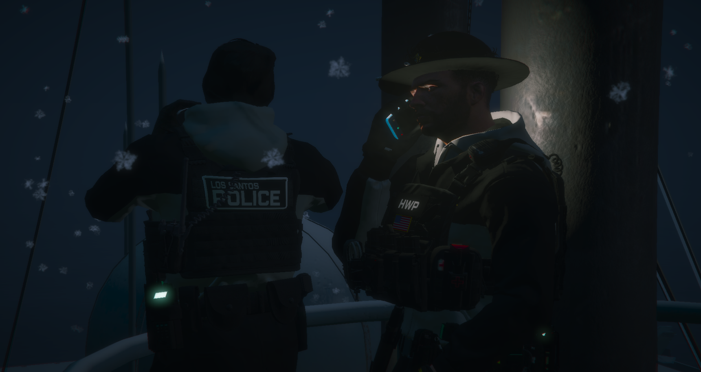

╔════≫──────๑ Kompendium Wiedzy LSPD ๑──────≪════╗
║───────────────────────────────────────────────────────────────────────────────────────────────────║╭━━━ ℳ𝒶𝓃𝑒𝓌𝓇𝓎 𝒫𝑜𝓈́𝒸𝒾𝑔𝑜𝓌𝑒 ━━━╮
➔ Los Santos Police Department (LSPD) to główna formacja policyjna działająca na terenie miasta Los Santos. Frakcja kieruje się głównym założeniem, które brzmi: "to serve and protect" ["Chronić i służyć"]. Jej zadaniem jest utrzymanie nieustanne egzekwowanie prawa oraz zapewnienie bezpieczeństwa, oraz konfortu pobytu mieszkańcom i odwiedzającym miasto.
║─────────────────────────────────────────────────────────────────────────────────────────║
➔ Tutejsza strona przedstawi ci najważniejsze informacje, oraz strategie do odgrywania służby porządkowej w świecie FiveM
║─────────────────────────────────────────────────────────────────────────────────────────║
